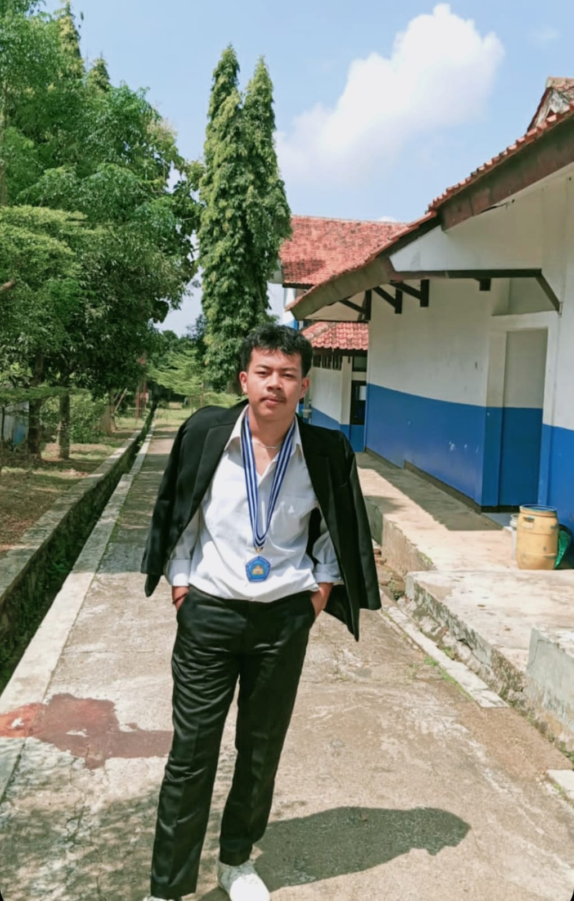

HOME
SELAMAT DATANG DI WEBSITE IKMAR FALIH DARUSSALAM
Website ini berisi informasi mengenai biodata, riwayat pendidikan, jadwal kuliah, dan profil keluarga. Website ini dibuat sebagai media informasi dan dokumentasi pribadi mahasiswa.
BIODATA
Nama: Ikmar Falih Darussalam
NIM: 20250910085
Tempat, Tanggal Lahir: Kuningan, 18 November 2005
Alamat: Kuningan, Jawa Barat
Program Studi: Sistem Informasi
Universitas: Universitas Kuningan

RIWAYAT PENDIDIKAN
SD Negeri 2 Cisantana
SMP Negeri 3 Kuningan
SMA Negeri 2 Kuningan
Universitas Kuningan
JADWAL KULIAH
Desain Web Dan Analisis Proses Bisnis
Statistika Data
Kalkulus Dan Analisis Perancangan System Informasi
Riset Operasi dan Arsitektur Komputer dan Sistem operasi
Bahasa Inggris Dan Pemrograman dasar